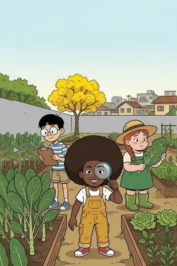

O Caso da Couve Mordida
Analytica Ensino · Coleção E-books Pedagógicos · 2026
Texto: a definir · Supervisão pedagógica: a definir · Revisão: a definir · Ilustrações: a definir · Projeto gráfico: a definir
O livro é uma história em quadrinhos de investigação. Alguém está comendo a couve da horta da escola, e a Bené, o Kenji e a Lu fazem o que os cientistas fazem: observam, levantam hipóteses, testam com uma armadilha de farinha, registram dados numa tabela de dupla entrada e descartam suspeitos com base em evidências. A descoberta (as lagartas que viram as borboletas brancas do recreio) leva a uma cadeia alimentar e a uma solução que cuida da horta e das borboletas. É um livro para ler, discutir e, no fim, escrever o próprio gibi.
Este guia acompanha o e-book do estudante O Caso da Couve Mordida, disponível na mesma biblioteca da plataforma.
A proposta une duas coisas que a BNCC pede para os Anos Iniciais: ler histórias em quadrinhos como gênero, com seus recursos próprios (balões, recordatórios, onomatopeias, sequência de quadros), e viver a investigação científica de verdade, com perguntas, hipóteses, coleta e análise de dados. Por isso o livro está no tema Educação 4.0 e 5.0: a turma resolve um problema real em equipe, usa evidências para decidir e escolhe uma solução que cuida das pessoas e do ambiente. A história não ensina por recado: a aprendizagem nasce do mistério, e o professor faz a ponte para os conceitos.
| Páginas | O que acontece | Para explorar |
|---|---|---|
| 2 | Quem é quem: os personagens e o índice do livro. | Antecipar: o que cada personagem vai fazer na história? |
| 3 e 4 | A Lu descobre a couve furada. A Bené examina com a lupa; o Kenji conta 37 buracos numa folha. | Recordatório (onde e quando), balão de grito, onomatopeia PLOFT. |
| 5 | O mural dos suspeitos: Pipoca, Seu Osvaldo, uma lesma, os passarinhos. | Hipótese: cada suspeito é uma explicação possível, que precisa ser testada. |
| 6 | O plano: farinha no chão e anotação dos buracos novos, de noite e de dia. | Planejar uma coleta de dados: o que observar, quando e como registrar. |
| 7 e 8 | Página dupla, à noite. Um cachorrinho se aproxima da farinha. | Ler a imagem: suspense sem falas, só recordatórios e o som dos grilos. |
| 9 | Pegadas na farinha. O Pipoca parece culpado, mas as folhas lá do alto também estão furadas. | Inferência: a evidência que derruba uma hipótese. |
| 10 | Seu Osvaldo vira suspeito e é inocentado (botas limpas). Nenhum rastro de lesma. | Descartar hipóteses com base em evidências, sem acusar ninguém. |
| 11 | O caderno do Kenji: tabela de dupla entrada e gráfico de barras. | Ler e interpretar dados: buracos de dia e de noite, aumento a cada dia. |
| 12 | A Lu vira a folha: ovos amarelos, lagartas listradas e o cocô delas. | Observação de perto; o culpado aparece onde ninguém tinha olhado. |
| 13 e 14 | O dilema: tirar todas? Seu Osvaldo pergunta em que as lagartas se transformam. Elas viram as borboletas brancas do recreio. | Balões de pensamento; mudança de ponto de vista. |
| 15 | Quem se alimenta de quem: Sol, couve, lagarta, passarinho. | Cadeia alimentar e o papel do Sol. |
| 16 a 18 | A solução: um canteiro com tela fina e um canteiro das borboletas. Duas semanas depois, couve inteira, uma crisálida e muitas borboletas. | Testar a solução com dados (68 buracos antes, 6 depois); “caso compartilhado”. |
| 19 a 23 | Como se lê um gibi, Caderno do detetive (desafios), Sua vez de criar e Palavras para lembrar (glossário). | Sistematizar os recursos dos quadrinhos e produzir uma HQ. |
Sugestão de sequência em quatro aulas de cerca de 50 minutos. Ajuste ao ritmo da turma.
Na p. 17, o Kenji fala “casulo” e a Bené corrige: “crisálida”. As borboletas formam crisálida; o casulo de fios de seda é feito pelas lagartas de muitas mariposas. Aproveite a correção bem-humorada para valorizar o vocabulário científico.
Que “caso” da sua escola (um problema real, pequeno e observável) a sua turma poderia investigar com hipóteses, dados e uma solução testada?
Bom trabalho com a turma!